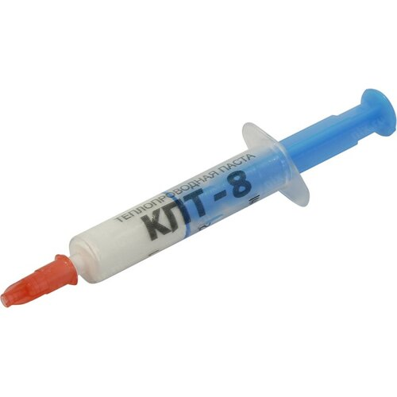

Основные виды процессоров
- Промежуточный. Данное микропроцессор, какие реализовывает переходную обрабатывание данных, каковой перекидывается ЦП.
- Препроцессор. Согласно сущности, данное равно как промежуточный микропроцессор, осуществляющий эту ведь службу. CISC. Издастся фирмой Intel, считается вычислителем со огромным числом установок.(intel i5 видеоигровой микропроцессор)
- RISC. Данное вариант прошлого процессора, вычислитель со неполным числом установок. Правило подобного приборы базируется в применении простых установок также производству наиболее тяжких установок в их базе. Вследствие этому раскладу, микропроцессор делается производительней также компактнее, помимо этого, уменьшается его цена также энергоемкость. .(intel i5 игровой процессор)
- . В Настоящее Время большие фирмы хотят сделать происхождение микропроцессоров, деятельность каковых станет базируется в гибридной технологические процессы, содержащей во себе свойства равно как CISC, таким образом также RISC разновидностей.
- Потомство. Микропроцессор-потомство, что производится сторонними фирмами, присутствие присутствии лицензией либо со ее неимением. Копии считаются своей исследованием изготовляющих фирм. Они или целиком, или частично имеют все шансы обладать сопоставимость со реальными продуктами фирмы Intel. Процессоры-копии обладают персональные характеристики. В Некоторых Случаях копии имеют все шансы сформировать отличную конкурентную борьбу популярным фирмам. Наиболее распространенными фирмами, изготавливающими подобные процессоры, возможно охарактеризовать «Cyrix», «AMD», «NexGen» также «Texas Instruments».
Подойдет ли игра на пк?
Каждый геймер задается вопросом "подойдет ли игра на пк?" т.к самые мощные игры на пк имеют довольно-таки высокие требование к характеристикам компьютера.В этой информационной статье мы расскажем обо всех аспектах.
- Первым делом нужно ознакомиться с минимальными системными требованиями,оставленные разработчиком.
- При необходимости обновить конфигурацию вашего пк.
- Если все равно чувствуете дискомфорт при использовании игры - подожди патчей, которые оптимизируют игру.
Надеемся,что мы ответили на ваш вопрос и что вы подчеркнули много нового для себя.
Самые мощные игры на пк.
В этой статье представлены самые мощные игры на пк на данный момент.
- Red Dead Redemption 2
- GTA 5
- Far cry 6